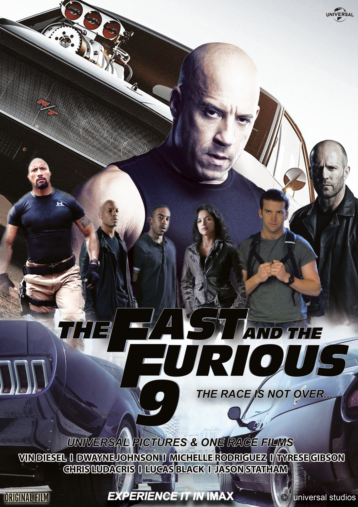
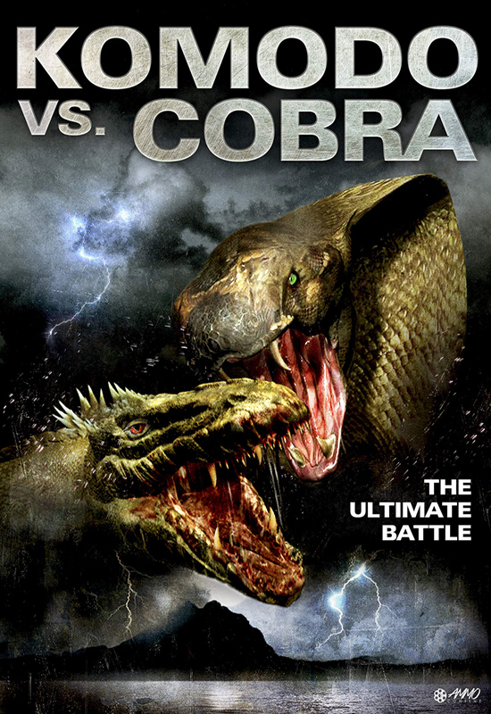
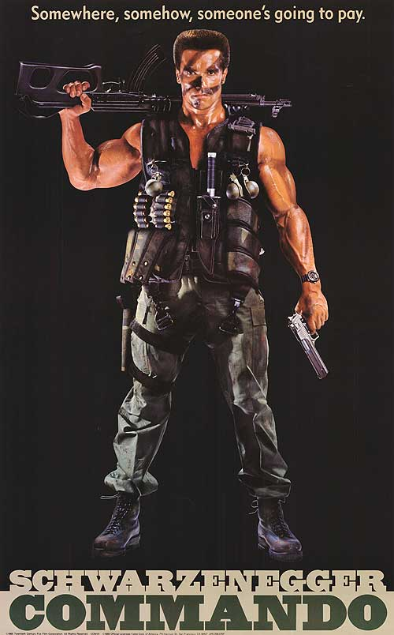
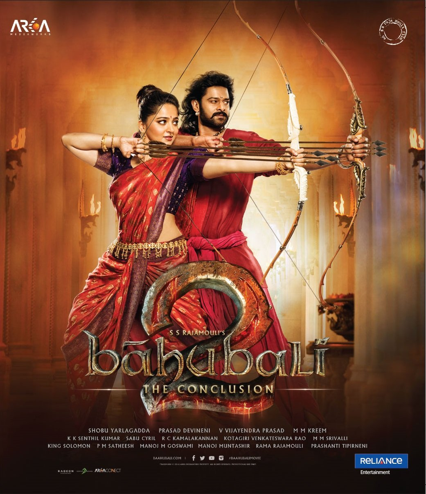
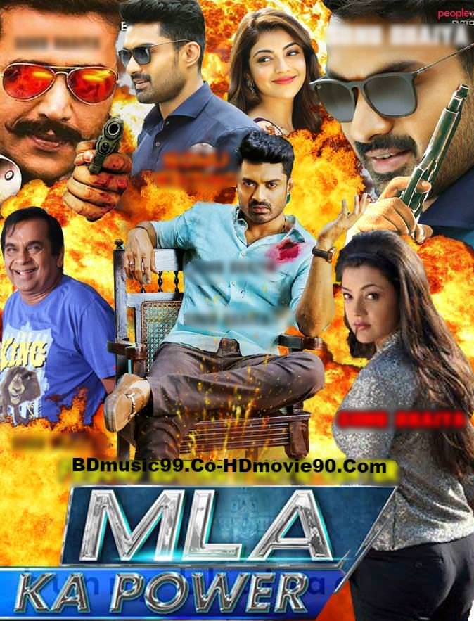
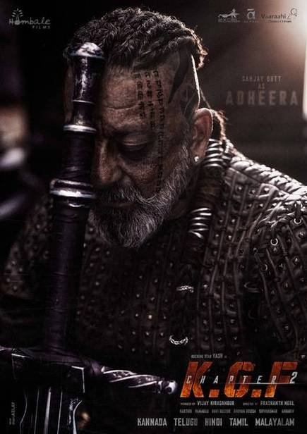
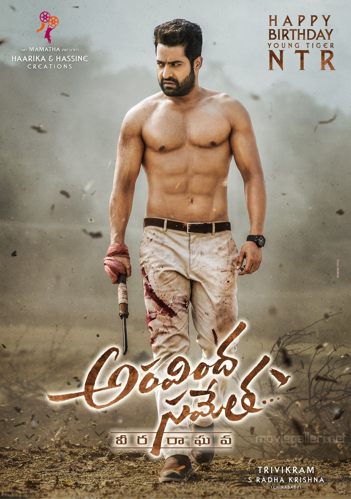
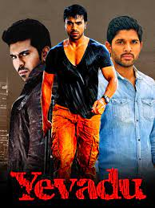

💥MOVIES 🎥
Hollywood:-

joker

fast fourier 9
Avtar

Commando vs cobra
Hacker

Black commando
Bollywood:-
Surya

Bahubali
Mahaabali
Kavacham

MLA ka power

K.G.F
Tollywood:-
Maharshi

Dear comrade
khoonkhar
Ala vaikunthapurramullo

Aravinda sametha

Yevadu
-------------------------------------------------------------------------------------------------------------------------------------------------------------------------------------------------------------------------------------
Contact :-
☎:
7016283990
:
200540107027@darshan.ac.in
:
Manipur habardi (361315) , Jam-kalyanpur , Devbhoomi dwarka , Gujarat , india.
EXPERIENCE + EXPLORE
Movies In Theaters
Movie Actors and Actresses
Mobile
New For Streaming
Special Offers
Gift Cards
Movie Trailers
Weekly Ticket
Mom's Movie Minute
EDITORIAL FEATURES
Summer Movie Guide
Awards Watch
Indie Movie Guide
Family Guide
House Of Screams
Movie News
Red Carpet Premieres
September Celebrity Birthdays
Award Shows Red Carpets